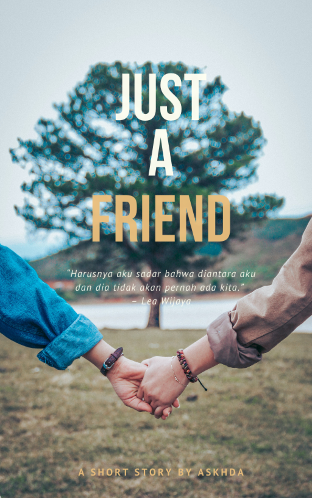

Just a Friend
Penulis: akshda
Terakhir diperbarui: 10 Februari 2021
Status: Berlanjut
Ketika kamu mengetahui sahabat yang kamu cintai mencintai sahabat sekaligus sepupumu, apa yang akan kamu lakukan?
Mengdukungnya?
Atau menghalanginya?
“Harusnya aku sadar bahwa diantara aku dan dia tidak akan pernah ada kita.” – Lea Wijaya